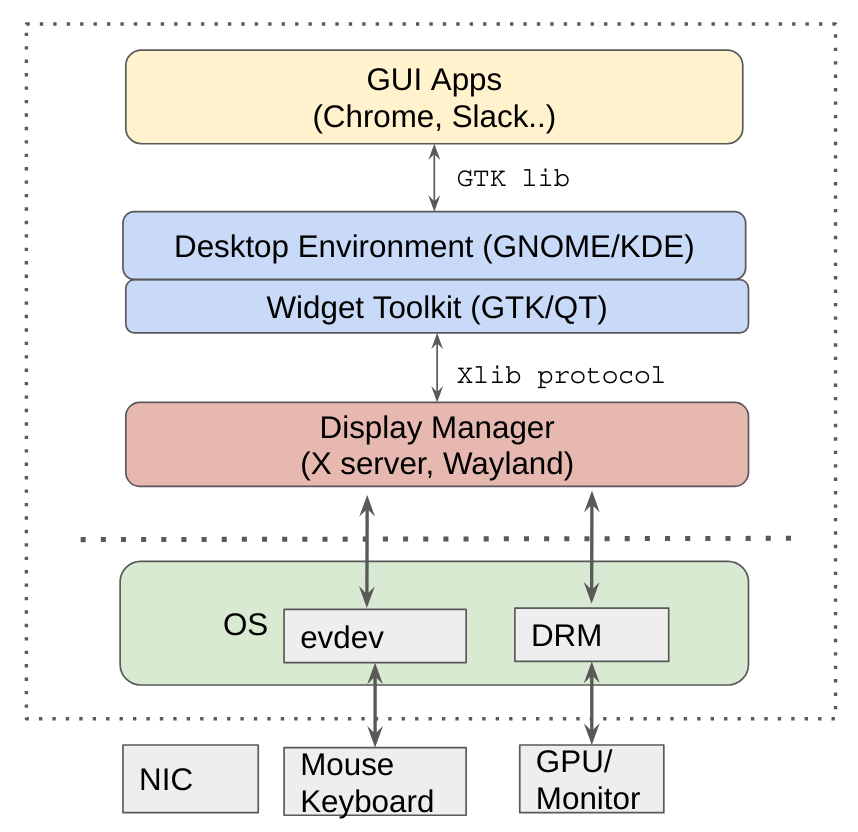
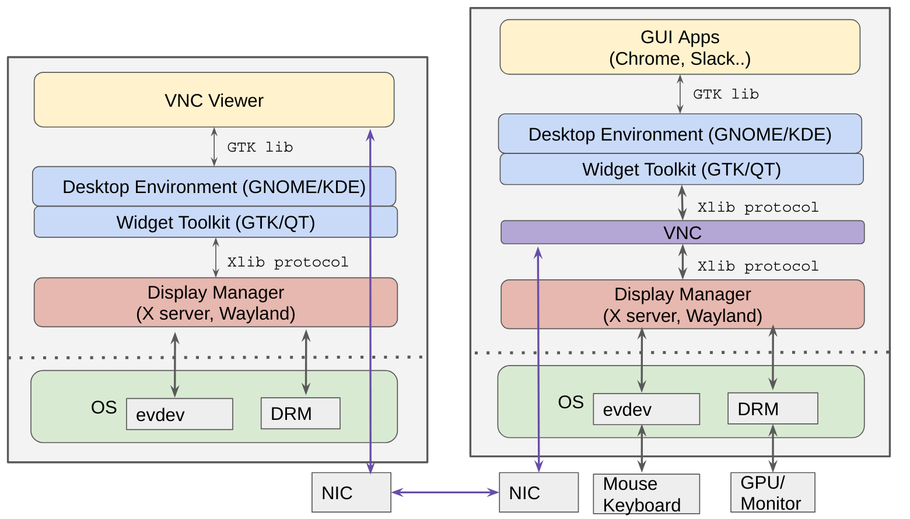

On Unix Graphic Softwares¶
Version History
| Date | Description |
|---|---|
| Dec 4, 2020 | Add high level libaries |
| May 1, 2020 | Initial Version |
Part I¶
For work reason, I use VNC a lot recently. I need to login into our lab’s servers and perform intensive graphic operations. Somehow I’m not a fan of GUI-based systems, but it really got me wonder: how VNC works? Or, how graphics/GUI works in general?
So I decided to look it up. The whole thing was very complex to me at the beginning. There are numerous layers of systems, and it not clear who is doing what. After getting a better understanding, I realize it is “do one thing and do it well” works at its best: Each layer of the graphic stack is doing what it is supposed to do, nothing more and nothing less. Even though the line blurred over the years (i think), the principle persists. I like it.
I’m no where near explaing the whole thing well (still a bit confused myself :)). But you can find awesome references at:
1) Wiki Display Server, 2) Wayland Architecture 3) StackExchange Difference between Xorg and Gnome/KDE/Xfce 4) https://en.wikipedia.org/wiki/Free_and_open-source_graphics_device_driver
Following are some figures I drew to show the architecture of all these softwares. In the graphic world, kernel’s involvement is minimal, but a critical one. Kernel mainly need to deliver mouse/keyboard events, render frames via graphic cards, handle network. In other words, kernel provides a mechanism. The policy is left to userspace stacks.
At the lowest level, we have Display Manager, or Display Server. Downstream, this layer interact with kernel, i.e., getting keyboard/mouse events from kernel evdev framework, rendering frames via DRM interfaces. Upstream, this layer accepts request from their clients (i.e., the widget layer) and make them happen in real displays. Typical systems at this layer are X.org server and Wayland. They follow the client-server model, communication has a certain protocol and is via socket (I guess?).
Next up, is the widget toolkit, or UX library layer.
The famous GTK/Qt belong to this layer.
What this layer is doing? So this one is a collection of widgets, like buttons, menu, dropdown,
i.e., GUI elements. Both GTK/Qt offer a lot such stuff (if you are using GNOME desktop, try run gtk3-widget-factory).
This layer ask the display manager layer (e.g. X.org server) to display stuff.
GNOME/KDE are desktop envionment,
they present the whole desktop experience, it includes many applications built based on GTK and Qt, respectively.
You probably have seen gnome-shell, yup, this is GNOME’s main program.
The highest layer is user applications, like Chrome (which by default uses GTK on linux, code on ui/gtk).
All these linux GUI applications, they are usually built on top of either GTK or Qt’s libraries.
That being said, if you want to develop GUI-based apps on Linux, chances are, you
will use either of the libraries.
This is a landscape overview: 
But how VNC fits into the big picture? In short, VNC sits in the middle between X and GTK/Qt. On one hand, VNC appears as a client of X. On the other, VNC appears as an X server to GTK/Qt. Middleman works at its best lol. There are, however, many different implementation choices. If you have used TigerVNC, which in turn uses Xvnc, its man page says: Xvnc is the X VNC (Virtual Network Computing) server. It is based on a standard X server, but it has a “virtual” screen rather than a physical one. X applications display themselves on it as if it were a normal X display, but they can only be accessed via a VNC viewer - see vncviewer(1). So Xvnc is really two servers in one. To the applications it is an X server, and to the remote VNC users it is a VNC server.
Thus it looks like this with VNC: 
A machine have multiple such instances, thus multiple virtual and physical display can coexist.
And for that, I think it’s all because of the clear separation of layers and good engineering
(man, those graphic framebuffer code is monstrous):

This post remind me of “What happens when you type google.com into your browser and press enter?”?
As always, hope you enjoyed this blog.
Part II¶
This part wants to look at those high-level libaries used by developers every day. I somewhat got interested when I started playing Steam games and saw “Vulkan Shaders”.
Vulkan is an alternative system to OpenCL/Direct3D. Instead of hiding details, Vulkan expose quite a lot low-level details and let programmers do the tuning.
So, what’s the difference between Vulkan/OpenCL/Direct3D with gtk/Qt? I guess the former is for graphic development, any shape. While the latter is some predefined gadgets and a framework for developing standadrd GUI apps?